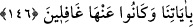

güzeli” ifâdesi, güzeli mânâsınadır. Bütün emirler güzeldir. Nitekim “Allah’ı anmak,
en büyük (ibadet) tir.” (el-Ankebût, 29/45) ayeti buna delildir.”
Ey İsrâiloğulları, “Yakında size, yoldan çıkmışların yurdunu” Firavun ve kavminin
Mısır’da bulunan tavanları üzerine çökmüş yurtlarını, Ad, Semûd ve benzeri kavimlerin
yaşadıkları yerleri veya Mısır topraklarını ve Şam’da zorbaların ve Amalika
kabilesinin oturduğu toprakları “göstereceğim” ki ibret alın. Amel etmekle
emrolunduğunuz Tevrat’ın hükümlerine muhâlefet ederek, siz de fâsıklardan yani yoldan
çıkmışlardan olmayın.
Buradaki “gösterme”nin mânâsı, varis kılmak yoluyla onları oralara sokmak da
olabilir. Yukarıdaki birinci yoruma göre bu söz, İsrâiloğulları için bir tehdit ve
korkutmadır. Bu ikinci yoruma göre ise bir vaad ve teşviktir.
Ayette ahireti istemenin dünyayı istemekten, Allah’ı talep etmenin de ahireti talep
etmekten daha güzel olduğuna işaret vardır. Âşıka gereken, en güzel olanı seçmektir.
“Yakında size yoldan çıkmışların yurdunu göstereceğim.” sözü, “Ahireti talebden
uzaklaşanların yurdunu göstereceğim.” demektir. Onların yurdu ise cennettir. Ahireti
talebden uzaklaşanların yurdu, Allah’ı talebde “güçlü padişahın huzûrunda doğruluk
koltuklarında” (el-Kamer, 54/55) oturmaktır.
Hâfız şöyle der:
Senin mahallenin sevdasıyla hatırımdan çıktı
Tûbâ’nın gölgesi, hurinin gönül alıcılığı ve havuz kıyısı
Gönül levhimde sevgilinin elif boyundan başka bir harf yok
Ne yapayım? Üstadım bir başka harf öğretmedi
146. Yeryüzünde haksız yere böbürlenenleri ayetlerimden uzaklaştıracağım.
Onlar bütün mucizeleri görseler de iman etmezler. Doğru yolu görseler onu yol
edinmezler. Fakat azgınlık yolunu görürlerse, hemen ona saparlar. Bu durum,
onların ayetlerimizi yalanlamalarından ve onlardan gafil olmalarından ileri
gelmektedir.
“Yeryüzünde haksız yere büyüklenenleri ayetlerimden uzaklaştırıcağım.” Burada
geçen “ayetler”den maksad, Tevrat levhalarında yazılı olan öğütler, hükümler ve diğer
tekvînî (kâinâtta mevcut olan) ayetlerdir. Gösterilmesi va‘dedilen yoldan çıkmışların